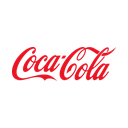

Manfredi Investment
Research & Markets
Equity Research · Informe Institucional
Datos al 3T 2026 (trimestre cerrado el 2 oct 2026)
Datos al 3T 2026 (trimestre cerrado el 2 oct 2026)

KONYSE · The Coca-Cola CompanyCifras fundamentales: SEC EDGAR (10-K 2025, presentado el 20 de febrero de 2026; 10-Q del 3T 2026, presentado el 28 de octubre de 2026; XBRL companyfacts) y comunicados de resultados trimestrales (8-K, del 1T 2016 al 3T 2026; el del 3T 2026 es del 27 de octubre de 2026). El tercer trimestre de Coca-Cola cerró el 2 de octubre de 2026. Precio de mercado: cierre del 11 de noviembre de 2026 (Yahoo Finance). "Mil millones" = billion de EE.UU. "EPS comparable" = EPS ajustado tal como lo reporta Coca-Cola (non-GAAP). "Volumen" = unit case volume, cajas unitarias de 24 porciones de 8 onzas vendidas por todo el sistema (la compañía y sus embotelladoras). Este documento es 100% analítico — no constituye una recomendación de compra, venta ni mantenimiento. Ver disclosure completo al pie.
01 — Resumen Ejecutivo
Coca-Cola cerró el tercer trimestre de 2026 (julio a principios de octubre) con ventas de $13,380 millones (+7%) y un orgánico de +7%, que excluye monedas y compras o ventas de negocios: +7 puntos de ventas de concentrado y +1 de precio/mix. El volumen de cajas unitarias del sistema creció 5%, igual que en el 2T (el del Mundial), con India, China, México y Brasil al frente; Norteamérica quedó en cero. El margen operativo comparable subió a 32.9% (31.9% un año antes) y el EPS comparable fue de $0.91 (+11%, con 2 puntos a favor por monedas), contra $0.88 que esperaba el consenso. La compañía subió la guía de 2026 por segunda vez: orgánico de al menos 5%, EPS comparable de al menos +11% (antes +9% a +10%) y flujo de caja libre de al menos $13,000 millones (antes unos $12,400 millones).
El marco de consumo masivo de este research desk hace una pregunta antes que ninguna otra: ¿el crecimiento viene de volumen o solo de precio? En Coca-Cola la respuesta se dio vuelta en dos años. En 2024 el orgánico fue de 12%, pero entre 4 y 6 puntos por trimestre salían de precios en mercados con inflación intensa (Argentina, sobre todo), según la propia compañía, y el volumen apenas creció 1%. En 2025 el volumen quedó en cero. En 2026 el volumen creció 3%, 5% y 5%, y el precio/mix bajó de +2% a +1%. El CFO lo explicó así: 4 puntos de aumentos de precio y 3 en contra por mezcla geográfica (crecen más los mercados con precio por caja bajo), por el calendario de inversiones y por categorías. En ocho trimestres el volumen promedió 2.25 puntos; en los últimos cuatro, 3.50.
La valuación se construye con cuatro métodos. Un flujo de caja descontado que proyecta volumen de 2.25%, precio/mix que converge a 2.5% y un margen de caja anclado en el flujo operativo real de 2025 y la guía de 2026, más las participaciones en embotelladoras a valor de mercado, da $66.02 (−32.3%). Los comparables contra seis pares de bebidas y consumo masivo, sin usar en ningún paso el precio ni el múltiplo de Coca-Cola, dan $74.35. La reversión a su propio P/E forward de diez años y a su P/E relativo al S&P 500 da $74.08, y el consenso de 24 analistas, $98.43. El blend ponderado es de $79.03, −19.0% contra $97.57.
Qué cambió desde septiembre. El fair value sube $3.03 (+4.0%), de $75.99 a $79.03. Casi todo es modelo: con el precio de septiembre ($86.84) el modelo nuevo da $79.09, así que los datos nuevos aportan $3.10 y el precio −$0.06 (el precio solo entra por el peso del patrimonio en el costo de capital del DCF). Por método, lo que más suma son los comparables ($1.69 al blend), porque los pares también subieron y la mediana de su P/E pasó de 21.2x a 22.9x, y el DCF ($1.37), por el volumen de ocho trimestres (de 1.50 a 2.25 puntos), una beta de pares más baja y un Treasury más bajo; el consenso suma $0.93. La reversión resta $0.96, porque el P/E del S&P 500 bajó de 19.2x a 17.7x. En cambio, la acción subió 12.4%: la brecha contra el precio pasa de −12.5% a −19.0%. El detalle por método está en la Sección 13.
La postura se mantiene: neutral con sesgo bajista. No es por el negocio: el volumen sostiene el crecimiento, el margen se expande con más publicidad, no con menos, y la caja es sólida. Es porque la acción subió 39.6% en el año y cotiza a 28.0x, con una prima de 22.3% sobre la mediana de sus pares y 26.1% por encima de su propio múltiplo de diez años. El P/E relativo al S&P 500 (1.58 veces) está muy por encima de su promedio (1.16), aunque ahora una parte es efecto denominador: el índice bajó a 17.7x porque sus ganancias esperadas crecieron más que su precio. Además, el litigio con el IRS (Sección 06) sigue sin fallo y es un riesgo de cola asimétrico: si Coca-Cola gana, recupera $1.53 por acción; si pierde, el costo estimado es de $6.26 por acción. Las Secciones 02 a 12 recorren los datos; la Sección 13 construye el fair value.
02 — Historia y Evolución
John Pemberton, farmacéutico de Atlanta, creó la fórmula en 1886; Asa Candler compró la compañía y la constituyó en Georgia en 1892, y en 1899 vendió los derechos de embotellado en casi todo EE.UU. por un dólar a dos abogados de Chattanooga. Ese acuerdo dio forma al modelo que sigue vigente: Coca-Cola fabrica el concentrado y hace el marketing, y embotelladoras independientes producen, distribuyen y venden. La compañía cotiza en la Bolsa de Nueva York desde 1919.
El siglo XX sumó las marcas que todavía son el núcleo (Fanta en 1940, Sprite en 1961, Diet Coke en 1982, Coca-Cola Zero en 2005, rebautizada Coca-Cola Zero Sugar) y una larga serie de compras de embotelladoras que después revirtió. Entre 2015 y 2019 la compañía hizo la refranquiciación más grande de su historia: vendió a embotelladoras independientes los territorios que operaba en Norteamérica, China, India y África, y las ventas netas cayeron 18.1% entre 2016 y 2018 sin que se deteriorara el negocio, porque se iban ventas de embotellado, de margen bajo. En paralelo se diversificó fuera de las gaseosas: compró Costa (café, 2019), el control de fairlife (lácteos ultrafiltrados, 2020) y BodyArmor (bebidas deportivas, 2021, por $5,600 millones), esta última ya desvalorizada en $760 millones en 2024 y $960 millones en 2025. En 2025 vendió su participación restante en Coca-Cola Consolidated ($2,392 millones), parte de la de CCEP ($741 millones) y su operación de producto terminado en Nigeria, y acordó vender el control de su embotelladora africana (CCBA) a Coca-Cola HBC.
Ventas netas anuales, en miles de millones de US$, 2016-2025. La caída de 2016-2018 es la refranquiciación de embotelladoras propias; la de 2020, la pandemia. Fuente: SEC EDGAR XBRL (10-K).
Desde 2019, con la refranquiciación casi completa, las ventas crecieron a una tasa compuesta de 4.3% anual. El 31 de marzo de 2026 Henrique Braun, hasta entonces director de operaciones, asumió como CEO en reemplazo de James Quincey, que pasó a presidente ejecutivo del directorio.
03 — Modelo de Negocio: Concentrado, Embotelladoras y Geografía
Concentrado y franquicia. Coca-Cola vende concentrados y jarabes a embotelladoras, que les agregan agua y endulzante, envasan y venden a supermercados, almacenes y restaurantes. Las operaciones de concentrado explicaron 59% de las ventas de 2025 pero 85% del volumen; las de producto terminado (embotelladoras consolidadas, Costa, fairlife y otras), 41% de las ventas y 15% del volumen. La diferencia de margen es enorme: el segmento Latinoamérica, casi todo concentrado, tuvo un margen operativo de 59.1% en 2025; Bottling Investments, que agrupa las embotelladoras propias, 7.4%. En la mayoría de los mercados el precio del concentrado se fija con un modelo "por incidencia": depende del precio al que la embotelladora vende la bebida terminada, así que cuando el embotellador sube precios, Coca-Cola cobra más sin cargar con el costo de latas, azúcar y camiones.
El sistema. El sistema Coca-Cola vendió 33.8 mil millones de cajas unitarias en 2025. Las embotelladoras más grandes son independientes y varias cotizan en bolsa: Coca-Cola FEMSA (México, Brasil, Colombia, Argentina y otros), Coca-Cola Europacific Partners (Europa occidental, Australia, Indonesia y Filipinas), Coca-Cola HBC (Europa central y oriental, Nigeria, Egipto), Arca Continental, Swire, Coca-Cola Bottlers Japan, Coca-Cola İçecek y Embotelladora Andina. Una sola embotelladora explicó 10% de las ventas de 2025, y las ventas a participadas contabilizadas por el método de participación sumaron $19,044 millones (39.7% del total). Esa dependencia es a la vez la fortaleza y el riesgo del modelo: el capital lo pone el sistema, pero Coca-Cola necesita que sus embotelladoras sean rentables para poder subirles el precio del concentrado.
| Participación (método de participación) | Valor de mercado 31-dic-2025 | Var. del precio en US$ hasta el corte | Valor de mercado al corte | Valor contable |
|---|---|---|---|---|
| Monster Beverage (MNST) | 15.66 | +18.4% | 18.54 | 5.59 |
| Coca-Cola Europacific Partners (CCEP) | 7.16 | +30.0% | 9.31 | 3.93 |
| Coca-Cola FEMSA (KOF) | 5.54 | +27.7% | 7.08 | 2.24 |
| Coca-Cola HBC (CCH) | 4.05 | +11.7% | 4.53 | 1.39 |
| Coca-Cola Bottlers Japan | 0.82 | +38.9% | 1.14 | 0.46 |
| Coca-Cola İçecek | 0.77 | +10.9% | 0.85 | 0.29 |
| Embotelladora Andina | 0.28 | +3.9% | 0.29 | 0.11 |
| Total cotizantes | 34.29 | +21.7% | 41.74 | 14.00 |
US$ miles de millones. Valor de mercado y contable al 31-dic-2025: 10-K 2025 (nota de participaciones; la compañía calcula el valor con el precio de cierre de cada acción). Valor al corte: cálculo propio, que actualiza el valor de diciembre por la variación del precio de cada acción entre el 31-dic-2025 y el 11-nov-2026, convertida a dólares (Yahoo Finance: MNST, CCEP, KOF y AKO-B cotizan en dólares; Coca-Cola HBC en Londres, Coca-Cola Bottlers Japan en Tokio y Coca-Cola İçecek en Estambul). En los nueve meses de 2026 la compañía no vendió participaciones (cobros por ventas de negocios e inversiones: $1 millón, 10-Q del 3T), así que la cantidad de acciones se toma constante. Para Coca-Cola FEMSA y Andina se usa el ADR como aproximación de las series que tiene Coca-Cola. Además, Coca-Cola tiene participaciones no cotizantes por 6.24 mil millones a valor contable (total de participadas $20,235 millones menos las cotizantes, 31-dic-2025).
Valor de mercado de las participaciones cotizantes al 11-nov-2026, en miles de millones de US$ (valores exactos en la tabla de arriba). Fuente: 10-K 2025 y Yahoo Finance, cálculo propio.
Esas participaciones valen 41.7 mil millones, 9.9% de la capitalización de Coca-Cola, y 44% de ese valor es Monster. En la valuación entran por separado, a valor de mercado menos un impuesto de 21% sobre la ganancia no realizada (5.8 mil millones), y por eso el flujo de caja descontado excluye los dividendos que cobra de ellas ($993 millones en 2025): contar las dos cosas sería sumar el mismo activo dos veces.
Segmentos y geografía. Coca-Cola reporta cuatro segmentos geográficos y uno de embotellado. Norteamérica es el más grande en ventas (40.8% en 2025), pero por su mayor peso de producto terminado (fairlife, fuentes de soda) tiene el margen más bajo de los geográficos (25.9%). EMEA explicó 22.6% de las ventas, Latinoamérica 13.2%, Asia Pacífico 11.1% y Bottling Investments 12.0%. Estados Unidos generó 39.9% de las ventas y el resto del mundo 60.1%. Por volumen el peso de los mercados emergentes es mucho mayor que por ventas: India, China, Brasil, México y el Sudeste Asiático son los que más cajas suman, con precios por caja más bajos.
Ventas netas comparables por segmento en 2025, en miles de millones de US$ (antes de eliminaciones entre segmentos). Resultado operativo reportado 2025: EMEA $4.30B, Latinoamérica $3.74B, Norteamérica $5.07B, Asia Pacífico $2.04B, Bottling Investments $0.43B. Fuente: comunicado del 4T 2025 y 10-K 2025.
Categorías. Las gaseosas representaron 69% del volumen mundial en 2025 (igual que en 2024). El resto son agua, bebidas deportivas, café y té (Smartwater, Powerade, BodyArmor, Costa), y jugos, lácteos y bebidas vegetales (Minute Maid, fairlife, Core Power). Dentro de las gaseosas, las versiones sin azúcar y light son "un porcentaje de mediados de la decena" del volumen, según Quincey en febrero de 2026; Coca-Cola Zero Sugar creció 14% en 2025 y 16% tanto en el 2T como en el 3T 2026.
04 — Desarrollos Recientes y Perspectiva
Cambio de CEO. El 10 de diciembre de 2025 el directorio eligió a Henrique Braun como CEO desde el 31 de marzo de 2026. Braun entró a la compañía en 1996, dirigió Brasil, la Gran China y Corea y Latinoamérica, y era director de operaciones desde enero de 2025. Quincey sigue como presidente ejecutivo. En enero de 2026 la compañía creó el cargo de director digital y reorganizó la conducción comercial; en junio anunció la salida de Jennifer Mann, presidenta de Norteamérica, cuyo segmento pasó a supervisar de forma interina el CFO, John Murphy, desde el 1 de agosto.
Guía de 2026 (27 de octubre). Orgánico de al menos 5% (antes alrededor de 5%), que ya incluye una leve reducción de inventarios de las embotelladoras en el 4T y seis días menos en ese trimestre; EPS comparable de al menos +11% (antes +9% a +10%; sobre los $3.00 de 2025, al menos $3.33), con cerca de 3 puntos a favor por monedas y 1 en contra por ventas de negocios; EPS comparable a moneda constante y sin compras y ventas, de al menos +9% (antes +7% a +8%). Tasa efectiva subyacente de 19.7% (antes 19.9%), por beneficios de este año que la compañía no espera que se repitan, y que no incluye el impacto del litigio con el IRS si perdiera. Flujo de caja libre de al menos $13,000 millones: al menos $15,200 millones de flujo operativo (antes $14,600 millones) y unos $2,200 millones de capex. El consenso de EPS de 2026 ($3.34) está apenas por encima del piso: implica $0.60 en el 4T, +3.4% contra el 4T 2025, con seis días menos y sin CCBA desde el cierre.
Venta de CCBA. En octubre de 2025 Coca-Cola acordó vender a Coca-Cola HBC 41.52% de su 66.52% en Coca-Cola Beverages Africa, la mayor embotelladora del continente, en una operación que valúa 100% del capital en $3,400 millones; se queda con 25%, con una opción para que Coca-Cola HBC lo compre dentro de los seis años siguientes al cierre. La operación ya generó un cargo de $1,274 millones en 2025 (sobre todo por diferencias de conversión acumuladas, reducido en $61 millones en 2026) y sacará del consolidado unos 3.6 mil millones de ventas de embotellado de margen bajo (estimación propia a partir de las cifras pro forma de Coca-Cola HBC). A la fecha de corte no había cerrado: la compañía ahora la espera durante el 4T 2026 (antes, "hacia fines del 3T o durante el 4T"), y según la prensa faltaba la aprobación de Tanzania. Para 2027 la compañía anticipa que la salida de CCBA restará unos 8 puntos a las ventas comparables y 2 al EPS comparable, con mejor margen y mejor retorno sobre el capital.
Más refranquiciaciones. En el 3T las embotelladoras propias de Singapur, Malasia y Myanmar pasaron a "mantenidas para la venta", con cierre esperado hacia mediados de 2027 (10-Q del 3T, nota 2). La compañía no publicó el precio ni las ventas de esas operaciones; el modelo las deja dentro del flujo hasta que se conozca la operación. En la conferencia, el CFO repitió que la compañía evalúa una salida a bolsa de sus embotelladoras en India.
fairlife. El ataque de ransomware de julio de 2026, que suspendió por unos días la producción en sus plantas de EE.UU., no aparece cuantificado en el comunicado ni en el 10-Q del 3T. En la conferencia la compañía dijo que fairlife volvió a crecer a dos dígitos en volumen y atribuyó el volumen en cero de Norteamérica en parte al feriado del 4 de julio (que cayó en el 2T) y a "problemas temporales en ciertos negocios de producto terminado"; Topo Chico acaba de volver a las góndolas de Texas.
Qué dijo la conferencia del 3T. Braun destacó 22 trimestres seguidos de ganancias de participación en valor en el total de bebidas listas para tomar y tres ideas: los envases accesibles funcionan, crecen tanto las versiones sin azúcar como las originales, y la ejecución local gana. Hubo ganancias de participación en Latinoamérica, Norteamérica y Asia Pacífico, y pérdidas en Europa occidental (Francia y el Reino Unido). En Asia Pacífico el precio/mix volvió a caer (−2%) por mezcla geográfica y por esas iniciativas de precio. El CFO dijo que el gasto en publicidad "above the line" creció a dos dígitos, que la presión de costos aumentó por logística y transporte, y que la deuda neta es de 1.3 veces el EBITDA, debajo de su rango objetivo de 2 a 2.5 veces, mientras esperan el fallo del IRS "en los próximos meses".
05 — Estados Financieros: Orgánico, Márgenes y Reinversión
Crecimiento orgánico trimestral descompuesto en ventas de concentrado y precio/mix, y volumen de cajas unitarias del sistema, en puntos porcentuales, 4T 2023 a 3T 2026. El rombo marca el orgánico total. Fuente: comunicados de resultados de Coca-Cola (tabla "Revenues and Volume").
| Puntos % | 4T23 | 1T24 | 2T24 | 3T24 | 4T24 | 1T25 | 2T25 | 3T25 | 4T25 | 1T26 | 2T26 | 3T26 |
|---|---|---|---|---|---|---|---|---|---|---|---|---|
| Ventas de concentrado | +3 | −2 | +6 | −2 | +5 | +1 | −1 | 0 | +4 | +8 | +4 | +7 |
| Precio/mix | +9 | +13 | +9 | +10 | +9 | +5 | +6 | +6 | +1 | +2 | +2 | +1 |
| de los cuales, mercados con inflación intensa | n. c. | +6 | +5 | +4 | +4 | n. c. | n. c. | n. c. | n. c. | n. c. | n. c. | n. c. |
| Orgánico | +12 | +11 | +15 | +9 | +14 | +6 | +5 | +6 | +5 | +10 | +6 | +7 |
| Monedas | −4 | −6 | −6 | −5 | −3 | −5 | −3 | 0 | −2 | +3 | +2 | +1 |
| Compras y ventas de negocios | −1 | −2 | −5 | −4 | −5 | −3 | 0 | 0 | −1 | −1 | −1 | −1 |
| Ventas netas reportadas | +7 | +3 | +3 | −1 | +6 | −2 | +1 | +5 | +2 | +12 | +7 | +7 |
| Volumen de cajas unitarias (sistema) | +2 | +1 | +2 | −1 | +2 | +2 | −1 | +1 | +1 | +3 | +5 | +5 |
Fuente: comunicados de resultados trimestrales (8-K). Coca-Cola redondea cada componente a puntos enteros, por lo que las filas pueden no sumar exacto. "Ventas de concentrado" es el efecto en ventas del volumen de concentrado despachado a las embotelladoras (en Bottling Investments, del volumen de cajas); puede separarse del volumen de cajas del sistema por calendario de despachos y por días de más o de menos (el 1T26 tuvo seis días más: +8 de concentrado con +3 de cajas; en el 3T26 el concentrado fue 2 puntos por delante de las cajas por calendario de despachos, y la compañía espera una leve reducción de inventarios en el 4T). "Mercados con inflación intensa": puntos del precio/mix que la compañía atribuyó a esos mercados; los cuantificó en los cuatro trimestres de 2024 (y 5 puntos en el año); en el 4T 2023 los mencionó sin número, y en 2025 solo dijo que "contribuyeron menos" que el año anterior. n. c.: no cuantificado por la compañía.
Tres lecturas. Primero, la hiperinflación explicaba buena parte del crecimiento de 2024: sin los puntos de mercados con inflación intensa, el precio/mix promedio de 2024 baja de 10.25 a 5.50 puntos por trimestre y el orgánico, de 12.25 a 7.50. Esos puntos de precio no son poder de marca: compensan la devaluación, que resta en la fila de monedas (−3 a −6 puntos por trimestre en 2024). En el año 2024, el precio/mix fue de 11% con 5 puntos de inflación intensa: 6 puntos sin ella. Segundo, en 2025 el crecimiento dependió del precio: el volumen del año fue cero y dos trimestres fueron negativos (el 3T 2024 y el 2T 2025), con México, India y Tailandia en baja. Es la señal que el marco pide vigilar. Tercero, en 2026 cambió la mezcla: el precio/mix bajó a +2%, +2% y +1%, y el volumen subió a +3%, +5% y +5%. El +5% del 3T, que tuvo solo las últimas semanas del Mundial, sugiere que el del 2T no fue solo el torneo; pero una parte es mezcla geográfica (India y China crecen con precios por caja bajos, lo que resta precio/mix), y la compañía advirtió que en 2027 se enfrenta a comparaciones más difíciles. Ningún trimestre se usa aislado: el modelo usa promedios de ocho trimestres. El riesgo que el marco vigila se dio vuelta: en 2026 el que no aporta es el precio, no el volumen.
Crecimiento orgánico anual y volumen de cajas unitarias del sistema, 2019-2025, en %. Fuente: comunicados del 4T de cada año.
| 3T 2026, puntos % | Concentrado | Precio/mix | Monedas | Orgánico | Volumen de cajas | Orgánico 9M26 |
|---|---|---|---|---|---|---|
| Europa, Medio Oriente y África | +6 | +1 | 0 | +7 | +5 | +6 |
| Latinoamérica | +8 | +7 | +9 | +16 | +6 | +10 |
| Norteamérica | +2 | +1 | 0 | +3 | 0 | +7 |
| Asia Pacífico | +8 | −2 | −3 | +6 | +6 | +4 |
| Bottling Investments | +10 | +3 | +1 | +12 | +8 | +11 |
| Consolidado | +7 | +1 | +1 | +7 | +5 | +8 |
Fuente: comunicado del 3T 2026 (tabla "Revenues and Volume", trimestre y nueve meses). En Latinoamérica el precio/mix de 2025 fue de 11% "incluido precio inflacionario en Argentina" (10-K 2025); el +7% del 3T26 lo explican, según la compañía, aumentos de precio y mezcla favorable, sin cuantificar Argentina (n. c.), y la conferencia describió a Argentina como un entorno "todavía difícil". La participación en valor del total de bebidas listas para tomar subió en Latinoamérica, Norteamérica y Asia Pacífico, y bajó en EMEA por Francia y el Reino Unido.
| US$ millones | 3T26 | 3T25 | 9M26 | 9M25 | 2025 | 2024 |
|---|---|---|---|---|---|---|
| Ventas netas | 13,380 | 12,455 | 39,232 | 36,119 | 47,941 | 47,061 |
| Margen bruto comparable | 62.7% | 61.0% | 62.8% | 61.9% | 61.5% | 61.1% |
| Margen operativo GAAP | 33.4% | 32.0% | 34.4% | 33.0% | 28.7% | 21.2% |
| Margen operativo comparable | 32.9% | 31.9% | 34.3% | 33.5% | 31.2% | 30.0% |
| Publicidad / ventas | 13.3% | 12.2% | 12.0% | 10.9% | 11.3% | 10.8% |
| Participación en ganancias de participadas | 653 | 644 | 1,641 | 1,556 | 2,031 | 1,770 |
| EPS diluido GAAP | $0.93 | $0.86 | $2.86 | $2.51 | $3.04 | $2.46 |
| EPS comparable | $0.91 | $0.82 | $2.74 | $2.42 | $3.00 | $2.88 |
Fuente: comunicados del 3T 2026 y del 4T 2025 (8-K), reconciliaciones non-GAAP; publicidad trimestral: 10-Q del 3T 2026 ($1,777 millones en el 3T26, $4,719 millones en los nueve meses); publicidad anual: 10-K. En el 3T26 el EPS comparable excluye, entre otros, una pérdida por liquidación de un plan de pensiones fuera de EE.UU. ($167 millones) y un beneficio fiscal de $172 millones; la tasa efectiva comparable fue de 19.3% (20.5% un año antes). El EPS comparable excluye cargos por la remedición del pago contingente de fairlife ($3,109 millones en 2024), las desvalorizaciones de BodyArmor ($760 millones en 2024 y $960 millones en 2025), el cargo por la embotelladora africana en venta ($1,274 millones en 2025), ganancias por ventas de participaciones (Coca-Cola Consolidated, CCEP) y los programas de productividad. Los programas de "productividad y reinversión" registran cargos casi todos los años, así que no son del todo no recurrentes. El margen de los nueve meses de 2026 se beneficia de seis días más en el 1T.
Margen bruto comparable, margen operativo comparable y publicidad sobre ventas, 2022-2025, en %. La publicidad sale del 10-K (US$ 4.0, 5.0, 5.1 y 5.4 mil millones, redondeados). Fuente: comunicados del 4T y 10-K, cálculo propio.
El margen operativo comparable subió de 28.7% en 2022 a 31.2% en 2025, y a 34.3% en los primeros nueve meses de 2026 (33.5% un año antes). No se explica por un recorte de publicidad: el gasto en publicidad pasó de 9.3% de las ventas en 2022 a 11.3% en 2025, y en 2026 sube más rápido que las ventas: +16.7% en el 3T y +19.8% en nueve meses. Según el CFO, la mejora del 3T (110 puntos básicos en el margen operativo, 170 en el bruto) combina la mejora de fondo, el viento a favor de las monedas y el efecto de haber vendido la operación de producto terminado en Nigeria. Es un margen de buena calidad, la señal opuesta a la que el marco marca como débil. Un punto a tener presente: 15.7% de la utilidad comparable de 2025 fue participación en ganancias de embotelladoras y Monster ($2,031 millones), que Coca-Cola contabiliza pero cobra solo en parte como dividendos ($993 millones).
06 — Balance, Deuda y Litigio con el IRS
| US$ millones | 2-oct-2026 | 31-dic-2025 |
|---|---|---|
| Caja, inversiones de corto plazo y títulos negociables | 16,595 | 15,806 |
| Deuda de corto plazo (incluye vencimientos corrientes) | 4,996 | 3,373 |
| Deuda de largo plazo | 36,623 | 42,119 |
| Deuda financiera neta | 25,024 | 29,686 |
| Arrendamientos operativos | — | 1,722 |
| Participaciones en participadas (valor contable) | 20,710 | 20,235 |
| Depósito al IRS + intereses (dentro de otros activos no corrientes) | 6,589 | 6,385 |
| Goodwill + marcas de vida indefinida | 27,867 | 28,022 |
| Activos y pasivos en venta (CCBA; desde el 3T también Singapur, Malasia y Myanmar), neto | 3,272 | 2,772 |
| Patrimonio atribuible a los accionistas | 37,372 | 32,169 |
| Activos totales | 107,950 | 104,816 |
Fuente: 10-Q del 3T 2026 (balance consolidado y notas 2 y 12) y 10-K 2025. La deuda de las unidades en venta (1.41 mil millones al 2-oct-2026: préstamos, vencimientos corrientes y deuda de largo plazo) figura en pasivos en venta y no se incluye, porque CCBA se suma a valor de patrimonio. Corrección: la edición anterior decía que la deuda de CCBA al 3-jul-2026 era de $584 millones; esa cifra era solo la porción corriente, y con la de largo plazo eran 1.45 mil millones. No cambiaba la valuación. EBITDA comparable de los últimos doce meses = resultado operativo comparable (16.34 mil millones) + depreciación y amortización (1.02 mil millones) = 17.36 mil millones, cálculo propio.
La deuda financiera neta de $25,024 millones (bajó desde 27.17 mil millones en julio) equivale a 1.44 veces el EBITDA comparable de los últimos doce meses (1.54 veces con arrendamientos), por debajo del rango de 2-3 veces típico de un staple con grado de inversión y del rango de 2 a 2.5 veces que se fija la propia compañía (su medida da 1.3 veces). Las calificaciones son A+ (S&P) y A1 (Moody's) de largo plazo y A-1/P-1 de corto; la compañía no tenía papeles comerciales emitidos al 2-oct-2026 y tenía 6.6 mil millones en líneas de crédito sin usar. En los próximos doce meses vencen $4,923 millones de deuda de largo plazo. El CFO dijo que manejan el balance "con prudencia" mientras esperan el fallo del IRS. Goodwill y marcas suman 25.8% de los activos; BodyArmor ya se desvalorizó dos veces. El capital de trabajo lo financian en buena parte los proveedores: el plazo de pago a la mayoría es de 120 días, y un programa voluntario de financiamiento de proveedores tenía $1,363 millones confirmados a fin de 2025.
En 2015 el IRS rechazó, para los años 2007-2009, el método que había acordado con Coca-Cola en 1996 para repartir ganancias entre la casa matriz y las licenciatarias extranjeras que fabrican el concentrado (Brasil, Irlanda, México, entre otras), y reasignó más de $9,000 millones de ingresos a EE.UU. La Tax Court le dio la razón al IRS en lo principal en noviembre de 2020 y en noviembre de 2023; en agosto de 2024 fijó un impuesto adicional de $2,700 millones que, con intereses, llegó a $6,000 millones. Coca-Cola pagó esos $6,000 millones el 10 de septiembre de 2024 como depósito, para frenar los intereses, y apeló. El depósito figura como activo (con 0.589 mil millones de intereses a cobrar al 2-oct-2026) y se le reintegra si gana. La Corte de Apelaciones del Undécimo Circuito escuchó el caso el 25 de junio de 2026; a la fecha de corte no había fallo, y la compañía lo espera "en los próximos meses". Según la prensa especializada, el tribunal presionó al gobierno sobre la aplicación retroactiva del cambio de método (la jueza Barbara Lagoa dijo que la retroactividad le parecía "un poco una violación del debido proceso"); una audiencia no anticipa el fallo. En juego hay unos $20,000 millones: los $6,000 millones ya depositados y la contingencia de unos $14,000 millones por los años siguientes.
| Qué está en juego | US$ miles de millones | Por acción |
|---|---|---|
| Si Coca-Cola gana: reintegro del depósito + intereses | 6.0 + 0.59 | +$1.53 |
| Si pierde: contingencia 2010-2025 estimada por la compañía, más lo que sumó en los nueve meses de 2026 | 14.0 + 1.4 | −$3.45 |
| Si pierde: tasa efectiva 3.8 puntos más alta hacia adelante (valor presente, cálculo propio) | 0.61 por año | −$2.81 |
| Si pierde: total | −$6.26 |
Fuente: 10-Q del 3T 2026 (nota 12) y 10-K 2025. La compañía mantiene que es "más probable que no" que gane y tiene una reserva de solo 538 millones de dólares (antes $529 millones); la contingencia crece unos $450 millones por trimestre. Si perdiera, no recuperaría el depósito (ya pagado, por eso no resta de nuevo) y "probablemente" enfrentaría la contingencia de unos $14,000 millones de impuesto e intereses por 2010-2025 y una tasa efectiva 3.8 puntos más alta en 2026. El valor presente de la tasa más alta es cálculo propio: 3.8% de la utilidad antes de impuestos de 2025 ($15,998 millones), como perpetuidad que crece 2.5% descontada al WACC. Por acción: sobre 4,314 millones de acciones diluidas.
El DCF Base de la Sección 13 no incluye ni el reintegro ni la contingencia: sigue el criterio contable de la compañía. Pero el riesgo es asimétrico: ganar suma $1.53 por acción y perder resta $6.26, 4.1 veces más. Con los pesos del blend, el fair value final quedaría en $79.45 si gana y en $77.30 si pierde (solo el DCF y la mitad EV/EBITDA de los comparables incorporan el efecto).
07 — Flujo de Caja, Dividendo y Asignación de Capital
| US$ millones | 2021 | 2022 | 2023 | 2024 | 2025 | 2026 guía (piso) |
|---|---|---|---|---|---|---|
| Flujo operativo reportado | 12,625 | 11,018 | 11,599 | 6,805 | 7,408 | 15,200 |
| Pagos extraordinarios dentro del flujo operativo | — | — | — | 6,000 (IRS) | 6,100 (fairlife) | — |
| Flujo operativo ajustado | 12,625 | 11,018 | 11,599 | 12,805 | 13,508 | 15,200 |
| Capex | 1,367 | 1,484 | 1,852 | 2,064 | 2,112 | 2,200 |
| Flujo de caja libre ajustado | 11,258 | 9,534 | 9,747 | 10,741 | 11,396 | 13,000 |
| Dividendos pagados | 7,252 | 7,616 | 7,952 | 8,359 | 8,779 | |
| Recompras de acciones | 111 | 1,418 | 2,289 | 1,795 | 746 | |
| (Dividendos + recompras) / FCF ajustado | 65% | 95% | 105% | 95% | 84% |
Fuente: SEC EDGAR XBRL (estado de flujo de efectivo), 10-K 2024 y 2025, guía del 27-oct-2026 ("al menos"; la de julio era de $14,600 millones de flujo operativo y $12,400 millones de flujo libre). El flujo operativo de 2024 incluye el depósito de $6,000 millones al IRS y el de 2025, $6,100 millones del pago final de $6,200 millones por fairlife (el resto del pago está en actividades de financiación); el ajuste los suma de vuelta. En los nueve meses de 2026 el flujo operativo fue de $12,471 millones y el capex, de $1,063 millones (flujo libre de $11,408 millones); según el CFO el capex va atrasado y se pone al día en el 4T, y el ciclo de conversión de caja es "el mejor en muchos años". Dividendos pagados en nueve meses: $6,842 millones; recompras: $900 millones (10.0 millones de acciones a $78.77 dentro del plan, por $787 millones).
Flujo operativo reportado, flujo operativo ajustado y capex, 2019-2025 y guía 2026, en miles de millones de US$. Fuente: SEC EDGAR XBRL y guía de la compañía.
La conversión de caja, medida como flujo de caja libre ajustado sobre utilidad comparable, fue de 88% en 2025 y la guía de 2026 implica 90%, por debajo del 90%-100% que el marco toma como vara del sector. La razón es estructural y no una mala calidad de la utilidad: la utilidad incluye la participación en ganancias de las embotelladoras, que se cobra solo en parte. Sin la parte no cobrada, la conversión de 2025 fue de 96%. El capex es bajo para una compañía de este tamaño (4.4% de las ventas en 2025), porque las plantas y los camiones son de las embotelladoras.
Dividendo. En febrero de 2026 el directorio aprobó el aumento número 64 consecutivo: 4%, a $0.53 por trimestre ($2.12 anual, 2.17% de rendimiento al precio de corte). Coca-Cola es un "Dividend King" (50 o más años seguidos de aumentos). En diez años el dividendo creció a una tasa compuesta de 4.2% anual. Equivale a 63% del EPS comparable esperado para 2026 y a 70% del piso del flujo de caja libre guiado. En octubre el directorio aprobó el dividendo trimestral de $0.53, pagadero el 15 de diciembre. Las recompras son chicas y compensan sobre todo la emisión por planes de acciones: en nueve meses la salida neta por recompras menos emisiones fue de $545 millones, y la cantidad de acciones en circulación está prácticamente estable desde 2019. La caja de la venta de participaciones en 2025 (Coca-Cola Consolidated, CCEP) ayudó a financiar el pago final de fairlife; la de CCBA entrará al cierre de la venta.
08 — Comparables de Industria
| Compañía | P/E 12 meses | EV/EBITDA | Crec. EPS 2 años | Orgánico (últ. trim.) | Volumen | Rend. div. | FCF yield | Beta 5 años |
|---|---|---|---|---|---|---|---|---|
| Coca-Cola (KO) — referencia, no entra | 28.0x | 23.2x | 6.8% | +7% (3T26) | +5% | 2.17% | 3.10% | 0.27 |
| PepsiCo (PEP) | 16.8x | 12.4x | 4.3% | +3.1% (3T26) | +3% bebidas; +1% alimentos | 4.10% | 5.33% | 0.32 |
| Keurig Dr Pepper (KDP) | 15.5x | 16.1x | 9.1% | +8.6% sin JDE Peet's (3T26) | +6.5% sin JDE Peet's (volumen/mezcla) | 2.40% | 4.21% | 0.35 |
| Monster Beverage (MNST) | 35.5x | 28.5x | 14.5% | +16.3% a moneda constante (3T26) | n. c. | — | 2.17% | 0.51 |
| Procter & Gamble (PG) | 23.6x | 16.3x | 6.4% | +4% (1T FY27) | +2% | 2.60% | 3.98% | 0.36 |
| Colgate-Palmolive (CL) | 24.3x | 16.6x | 5.8% | +3.6% (3T26) | +1.7% | 2.16% | 4.89% | 0.31 |
| Philip Morris International (PM) | 22.2x | 17.2x | 8.9% | +7.1% (3T26) | +0.6% (envíos) | 3.26% | 4.46% | 0.35 |
| Mediana de los seis pares | 22.9x | 16.4x | ||||||
| Mediana sin Monster (cinco pares) | 22.2x | 16.3x |
P/E 12 meses: cálculo propio = precio de cierre del 11-nov-2026 (Yahoo Finance) / EPS de consenso de los cuatro trimestres siguientes al último reportado, del 4T 2026 al 3T 2027 (25% del año 2026 + 75% del 2027; en P&G, cuyo año fiscal cierra en junio, 75% del FY2027 + 25% del FY2028). Consenso de EPS: Nasdaq/Zacks, 11-nov-2026. Crecimiento del EPS a dos años: tasa compuesta del consenso 2026-2028 (P&G: FY2027-FY2029). EV/EBITDA (últimos doce meses), rendimientos y beta: stockanalysis.com, leídos el 12-nov-2026 durante la rueda; el EV y los rendimientos se llevan al cierre del 11-nov moviendo la capitalización y el precio (cálculo propio), sin otro recálculo; el EV de la fuente incluye arrendamientos. Para Coca-Cola el EV/EBITDA es cálculo propio: EV (capitalización + deuda neta con arrendamientos + minoritarios − participaciones y CCBA) / EBITDA comparable sin CCBA; stockanalysis da 25.5x sin descontar las participaciones. Orgánico y volumen del último trimestre reportado: comunicados de cada compañía (PepsiCo, 8-oct-2026, volumen orgánico por división; Keurig Dr Pepper, 3-nov-2026, ventas y "volumen/mezcla" del negocio anterior a la compra de JDE Peet's; Monster, 5-nov-2026, ventas a moneda constante, sin un volumen comparable; P&G, 22-oct-2026, primer trimestre de su año fiscal 2027; Colgate, 30-oct-2026; Philip Morris, 21-oct-2026, envíos totales). En la regresión contra volumen se usa el de bebidas de PepsiCo, como en la edición anterior.
P/E sobre el EPS de consenso de los próximos doce meses: Coca-Cola y los seis pares. Fuente: Yahoo Finance y Nasdaq/Zacks, 11-nov-2026, cálculo propio.
Comparación completa contra PepsiCo bajo la misma vara (crecimiento, márgenes, caja, balance, múltiplos y valuación propia): informe de PEP, Sección 09.
Coca-Cola cotiza a 28.0 veces las ganancias de los próximos doce meses, 22.3% por encima de la mediana de los seis pares (22.9x). Dentro de bebidas, solo Monster, con un crecimiento del EPS de 14.5% anual, cotiza más caro; PepsiCo y Keurig Dr Pepper cotizan a 16.8x y 15.5x. Los tres staples de calidad similar (P&G, Colgate y Philip Morris) cotizan entre 22.2x y 24.3x: subieron con el sector desde septiembre, y la mediana del grupo pasó de 21.2x a 22.9x. Coca-Cola se valúa como un caso aparte. Monster es el par que infla el promedio y el techo del rango; por eso el Método 2 usa la mediana, y la Sección 13 muestra también el resultado sin Monster.
¿Hay un ajuste por calidad del crecimiento? La regla anti-circularidad del marco solo lo permite si una regresión del grupo lo sostiene. Se corrieron dos:
| Regresión del P/E de los pares contra… | Puntos | Pendiente | R² | Sin el punto más extremo |
|---|---|---|---|---|
| Crecimiento del EPS a dos años (consenso) | 6 | 1.41 | 0.51 | Sin Monster: R² 0.011, pendiente −0.21 |
| Volumen del último trimestre | 5 | −1.45 | 0.65 | Sin Keurig Dr Pepper: R² 0.40, pendiente −2.18 |
Mínimos cuadrados ordinarios, cálculo propio. Criterio declarado antes de correrlas: se ajusta el múltiplo solo si el R² es de al menos 0.5 con pendiente positiva, con todos los puntos y también sin el más extremo. Monster no reporta volumen y queda fuera de la segunda regresión. Con cinco o seis puntos, ninguna de las dos tiene poder estadístico.
Contra el crecimiento del EPS, el R² de 0.51 apenas pasa el umbral, y lo produce un solo punto: sin Monster cae a 0.011 y la pendiente se vuelve negativa. Contra el volumen, el R² es de 0.65 pero con pendiente negativa: el mercado paga menos a los que más volumen suman en este grupo (Keurig Dr Pepper, el de más volumen, es el más barato en P/E). Ninguna sostiene un premio para Coca-Cola, así que la Sección 13 aplica la mediana de los pares sin ajuste. Como referencia, aun aplicando la ecuación de la primera regresión, el P/E "que correspondería" al crecimiento esperado de Coca-Cola (6.8%) sería de 21.1x, por debajo de la mediana.
09 — Gobierno Corporativo y Estructura Accionaria
Fuente: SEC DEF 14A de Coca-Cola (proxy 2026, presentado el 16-mar-2026; tenencias al 2-mar-2026 y, para Berkshire, al 31-dic-2025), 8-K del 10-dic-2025, 14-ene-2026, 19-feb-2026 y 25-jun-2026; stockanalysis.com (tenencia institucional e insiders, posiciones cortas, sep-2026).
Una sola clase de acciones y ningún accionista con más de 10%. Berkshire Hathaway tiene sus 400 millones de acciones desde 1994 y no las vendió. La sucesión fue ordenada: Braun fue director de operaciones durante un año antes de asumir, y Quincey sigue como presidente ejecutivo, lo que reduce el riesgo de transición pero concentra poder en el directorio. La mayor parte de la compensación de Quincey en 2025 ($22.9 millones de $31.2 millones) fue en acciones y opciones, con metas de desempeño a tres años en el caso de las acciones. No hay a la fecha de corte una campaña activista pública; en consumo masivo, las campañas de los últimos años (Elliott en PepsiCo) apuntaron a compañías con volumen débil, no es el caso de Coca-Cola en 2026.
10 — Registro de Riesgos
| Riesgo | Descripción y dato de respaldo | Impacto |
|---|---|---|
| Valuación y tasas | P/E de 28.0x, 26.1% sobre su promedio de diez años, con el Treasury a 10 años en 5.00% por encima del rendimiento del flujo de caja libre (3.10%). Medio punto más de WACC baja el DCF Base 8.5%. | Alto |
| Litigio con el IRS | Fallo pendiente del Undécimo Circuito, que la compañía espera "en los próximos meses". Si Coca-Cola pierde: −$6.26 por acción entre la contingencia de unos $14,000 millones y 3.8 puntos más de tasa efectiva (Sección 06). | Alto (binario) |
| Volumen negativo o nulo | El volumen fue cero en 2025 y negativo en uno de los últimos ocho trimestres; 2026 suma +3%, +5% y +5%, y la compañía advirtió comparaciones más difíciles en 2027. El Base ya usa 2.25% por año: cada 2 puntos anuales de volumen mueven el DCF Base en torno a 8% (Sección 13). | Medio-alto |
| GLP-1 y consumo de azúcar | Morgan Stanley estima una caída de ~3% en el consumo de gaseosas hacia 2035 y 24 millones de usuarios en EE.UU. Las gaseosas son 69% del volumen y las sin azúcar, "mediados de la decena" de ese volumen: alrededor de 59% del volumen total son gaseosas con azúcar. Aplicado a Norteamérica (40.8% de las ventas, suponiendo que su mezcla de categorías es igual a la mundial), el arrastre sería de unos 0.08 puntos de volumen por año, y restaría $0.21 al DCF Base. Según la compañía, los usuarios de GLP-1 se pasan a versiones sin calorías, no dejan de tomar bebidas. | Bajo-medio |
| Emergentes, monedas e hiperinflación | 60% de las ventas fuera de EE.UU. Las monedas restaron 2 puntos a las ventas y 12% al resultado operativo en 2025 (peso mexicano, peso argentino, real, lira turca). El precio inflacionario de Argentina infla el precio/mix sin ser poder de marca (Sección 05). | Medio |
| Salud de las embotelladoras | Una embotelladora explica 10% de las ventas y las participadas, 40%. Si las embotelladoras no pueden trasladar precios, Coca-Cola no puede subir el concentrado; además 16% de su utilidad es participación en sus ganancias. | Medio |
| Impuestos a bebidas azucaradas y regulación | Impuestos por litro o por gramo de azúcar en decenas de países, etiquetado frontal en Latinoamérica, restricciones a ingredientes en EE.UU.; favorecen la migración a versiones sin azúcar. | Medio |
| Costo de insumos y aranceles | Aluminio, PET, jugo concentrado y endulzantes. La compañía mencionó "mayores costos de insumos" en el 1T y el 2T 2026, y en el 3T dijo que la presión de costos aumentó por logística y transporte; en el modelo de concentrado los absorbe sobre todo la embotelladora. | Bajo-medio |
| Ejecución: fairlife, BodyArmor y Norteamérica | Ciberataque en fairlife (julio de 2026, sin impacto cuantificado), dos desvalorizaciones de BodyArmor ($1,720 millones en total), salida de la presidenta de Norteamérica y volumen en cero en Norteamérica en el 3T por problemas temporales de abastecimiento en producto terminado. | Bajo-medio |
El escenario Bear de la Sección 13 toma volumen cero (el de 2025), precio/mix de 1.5%-2.0%, un punto menos de margen de caja, WACC medio punto más alto y crecimiento a perpetuidad de 2.0%. No incluye la pérdida del juicio con el IRS, que se muestra aparte.
11 — Catalizadores
| Evento | Fecha esperada | Por qué importa |
|---|---|---|
| Fallo del Undécimo Circuito (IRS) | Sin fecha; la audiencia fue el 25-jun-2026 y la compañía lo espera "en los próximos meses" | Evento binario: $1.53 a favor o $6.26 en contra por acción. Cualquiera de las partes puede pedir revisión a la Corte Suprema. |
| Cierre de la venta de CCBA | 4T 2026 (según la prensa, faltaba Tanzania) | Salen del consolidado unos 3.6 mil millones de ventas de embotellado; sube el margen consolidado y entra caja por el 41.52%. En 2027 resta unos 8 puntos a las ventas comparables y 2 al EPS. |
| Resultados del 4T 2026 y guía de 2027 | Febrero de 2027 | El 4T tendrá seis días menos y una leve reducción de inventarios. La guía de 2027 dirá si el algoritmo de largo plazo (orgánico de 4%-6%) se sostiene con volumen contra las comparaciones del Mundial y del 3T26. |
| Venta de las embotelladoras de Singapur, Malasia y Myanmar; posible salida a bolsa en India | Mediados de 2027 (a confirmar) | Siguen la refranquiciación: menos ventas de embotellado y más margen. Ni el precio ni las ventas son públicos. |
| Aumento del dividendo número 65 | Febrero de 2027 (habitual) | Con un payout de 63% del EPS comparable, un aumento de 4%-5% es consistente con la historia. |
| Conferencia CAGNY | Febrero de 2027 | Primera CAGNY completa de Braun como CEO: prioridades de cartera y algoritmo. |
12 — Modelo Financiero Proyectado y Momentum de Estimados
| Métrica | 2025 (real) | 2026 guía (27-oct) | 2026 consenso | 2027 consenso | 2028 consenso |
|---|---|---|---|---|---|
| Ventas (US$ miles de millones) | 47.94 | — | 50.45 | n. d. | n. d. |
| Orgánico | +5% | ≥ +5% | n. d. | n. d. | n. d. |
| EPS comparable | $3.00 | ≥ $3.33 | $3.34 | $3.53 | $3.81 |
| Crecimiento del EPS comparable | +4% | ≥ +11% | +11.3% | +5.7% | +7.9% |
Fuentes: guía de la compañía (comunicado del 27-oct-2026); consenso de EPS de Nasdaq/Zacks, 11-nov-2026 (9, 10 y 6 estimaciones para 2026, 2027 y 2028; stockanalysis, con S&P Global y 24 estimaciones, da $3.34 para 2026 y no publica 2027 sin suscripción); consenso de ventas 2026 de stockanalysis (19 estimaciones). No hay un consenso público verificable de ventas ni de orgánico para 2027-2028 (n. d.). El piso de EPS de la guía es cálculo propio aplicando +11% a los $3.00 de 2025.
EPS comparable real de 2024 y 2025 y consenso de 2026 a 2028 (Nasdaq/Zacks), en US$ por acción. El consenso de 2026 está apenas por encima del piso de la guía ($3.33).
Dos lecturas. Primero, el consenso de 2026 subió de $3.29 a $3.34 con la guía nueva, y queda apenas por encima de su piso: implica un 4T de $0.60, con seis días menos, sin CCBA desde el cierre y con 3 puntos de EPS en contra por ventas de negocios. Segundo, para 2027 el consenso no se movió ($3.53) y espera una desaceleración a +5.7%: la compañía anticipa monedas levemente en contra (en 2026 sumaron unos 3 puntos) y 2 puntos menos de EPS por la salida de CCBA. No hay una serie pública verificable de revisiones de EPS de Coca-Cola en los últimos 90 días. Este informe no proyecta línea por línea más allá de 2028; el caso Base del DCF supone ventas sin CCBA de 48.9 mil millones en 2027 (+4.2% de crecimiento orgánico sobre una base 2026 sin CCBA de 46.9 mil millones).
13 — Valuación: Cuatro Métodos y el Fair Value
Los pesos son los de la casa: flujo de caja descontado (DCF) 15%, comparables 25%, reversión histórica 35% y consenso 25%. Una advertencia antes de los números: dos de los cuatro métodos —la reversión y el consenso— parten de cómo el mercado viene valuando a Coca-Cola, y juntos pesan 60% del blend. El DCF y los comparables no usan el precio ni el múltiplo de Coca-Cola en ningún paso. La síntesis muestra el resultado de cada grupo por separado.
Costo de capital. Tasa libre de riesgo de 4.998% (Treasury a 10 años, cierre del 11-nov-2026; en septiembre, 5.255%) y prima de riesgo de mercado de 5.0%. La beta de Coca-Cola a cinco años es de 0.27, muy baja, así que se usa la mediana de sus pares de bebidas (PepsiCo 0.32, Keurig Dr Pepper 0.35, Monster 0.51: mediana 0.35, contra 0.41 en septiembre) ajustada por Blume (0.67 × beta + 0.33): 0.565, el mismo criterio que en P&G. El costo del equity es de 7.82%, por encima del piso del marco (tasa libre de riesgo + 2.5% = 7.50%). La deuda, con una tasa supuesta de 5.60% antes de impuestos (el Treasury más 60 puntos básicos, un supuesto propio para un emisor A+) y la tasa efectiva subyacente guiada de 19.7%, cuesta 4.50% después de impuestos y pesa 9.0% del valor total a precios de mercado. El WACC es de 7.52%. Con la beta propia ajustada por Blume (0.511) el costo del equity sería de 7.55%, el WACC de 7.28% y el DCF Base daría $69.18 en lugar de $66.02: elegir la beta de los pares resta $3.16 por acción, y se declara.
Crecimiento. Las ventas se proyectan separando volumen de precio/mix. El volumen del caso Base es 2.25% anual, el promedio de los últimos ocho trimestres del volumen de cajas del sistema (que incluye el trimestre del Mundial, el +5% del 3T26 y un trimestre negativo); en septiembre era 1.50%, porque la ventana todavía incluía el 3T 2024 (−1%). Se usa el volumen de cajas y no el de concentrado porque mide la demanda del consumidor y porque el concentrado se mueve con el calendario de despachos: en ocho trimestres el concentrado promedió 3.50 puntos, más que las cajas, en parte por los seis días de más del 1T26 y despachos adelantados que la compañía espera revertir en parte en el 4T. El precio/mix parte de 2.0% en 2027 (el de los últimos tres trimestres fue 1.67) y converge a 2.5% desde 2029: la inflación de largo plazo, algo por encima de la meta de 2% de la Reserva Federal por el peso de los emergentes. No se usa el precio/mix de 2023-2024, inflado por la hiperinflación, ni el promedio de ocho trimestres (4.00), que todavía la arrastra. El resultado es un orgánico de 4.25% en 2027 que sube a 4.75% desde 2029: por debajo de la guía de 2026 (al menos 5%) y en la parte baja del algoritmo de largo plazo de la compañía (4%-6%). Monedas neutrales. Crecimiento a perpetuidad de 2.5%.
Qué flujo se descuenta. El flujo de caja libre sin apalancar de la operación: flujo operativo ajustado, más intereses netos después de impuestos, menos capex, menos los dividendos cobrados de participadas (porque las participaciones se suman aparte a valor de mercado). La base es una Coca-Cola sin CCBA, que sale del consolidado a fin de 2026 y se valúa aparte al precio de la venta.
Margen de caja anclado en el flujo real. El flujo operativo de 2024 y 2025 está distorsionado por el depósito al IRS y el pago final de fairlife; ajustado por esos pagos, el margen de flujo libre así definido fue de 23.2% en 2025, y el piso de la guía de 2026 ($15,200 millones de flujo operativo y $2,200 millones de capex) implica 24.8%. Los nueve meses de 2026 no sirven como base aislada: dieron 28.4% con seis días más en el 1T, un capex atrasado que la compañía recupera en el 4T y un flujo estacional (los últimos doce meses darían 27.2%, inflados por esas mismas razones). Por eso el año 1 usa la ventana de 2025 real más 2026 guiado: 23.98% consolidado, que sin CCBA (una embotelladora con margen de caja estimado de 4.7%) sube a 25.49%. El margen se mantiene constante en el Base, aunque el margen operativo comparable viene subiendo; el Bull suma hasta 1.25 puntos. Cambio de criterio, declarado: el volumen del Bull pasa de 2.5% fijo al promedio de los últimos cuatro trimestres (3.50%), porque con el Base en 2.25% un Bull de 2.5% casi no se distinguía del Base; con el criterio anterior el Bull daría $86.12. El Bear sigue en volumen cero (el de 2025).
| Supuesto | Bear | Base | Bull |
|---|---|---|---|
| Volumen de cajas anual (2027-2031) | 0.0% | +2.25% | +3.50% |
| Precio/mix (2027 → 2029 en adelante) | 1.5% → 2.0% | 2.0% → 2.5% | 2.5% → 3.0% |
| Crecimiento anual compuesto de ventas sin CCBA 2026-2031 (resultado) | 1.8% | 4.6% | 6.3% |
| Margen de flujo libre (sin dividendos de participadas) | 25.49% − 1.0 | 25.49% | 25.49% + 0.25 a 1.25 |
| WACC / crecimiento a perpetuidad | 8.02% / 2.0% | 7.52% / 2.5% | 7.02% / 3.0% |
| Valor de la operación (US$ miles de millones) | 194.2 | 267.6 | 370.1 |
| % del valor en la perpetuidad | 73.2% | 78.0% | 82.7% |
| Fair value por acción | $49.01 | $66.02 | $89.79 |
| Caso Base (US$ miles de millones) | 2027 | 2028 | 2029 | 2030 | 2031 |
|---|---|---|---|---|---|
| Crecimiento orgánico (volumen + precio/mix) | 4.25% | 4.50% | 4.75% | 4.75% | 4.75% |
| Ventas sin CCBA | 48.9 | 51.1 | 53.5 | 56.0 | 58.7 |
| Flujo de caja libre (25.49% de las ventas) | 12.46 | 13.02 | 13.63 | 14.28 | 14.96 |
| Valor presente | 11.80 | 11.46 | 11.17 | 10.88 | 10.60 |
| Del valor de la operación al valor por acción (caso Base) | US$ miles de millones | Por acción |
|---|---|---|
| Valor de la operación (flujos + perpetuidad) | 267.59 | $62.03 |
| − Deuda financiera neta, sin arrendamientos (2-oct-2026) | −25.02 | −$5.80 |
| − Participaciones minoritarias | −2.16 | −$0.50 |
| + Participaciones cotizantes a valor de mercado, menos 21% de impuesto sobre la ganancia | 35.92 | $8.33 |
| + Participaciones no cotizantes a valor contable | 6.24 | $1.45 |
| + CCBA: 66.52% × $3,400 millones (precio de la venta) | 2.26 | $0.52 |
| Valor del patrimonio / fair value por acción | 284.82 | $66.02 |
Modelo propio. Valuación al cierre del 3T (2-oct-2026), la fecha del balance: el 4T 2026 (octubre a diciembre) entra como un cuarto de año sobre la base 2026 sin CCBA (46.88 mil millones = consenso de ventas 2026 de 50.45 menos unas 3.57 de CCBA), descontado a mitad de ese período; los años siguientes, a mitad de año. Valor presente de los flujos explícitos: 58.9 mil millones; de la perpetuidad: 208.7 mil millones. Los arrendamientos operativos no se restan porque sus pagos ya reducen el flujo operativo. Se divide por 4,314 millones de acciones diluidas (promedio del 3T 2026). Las embotelladoras de Singapur, Malasia y Myanmar, en venta desde el 3T, siguen dentro del flujo: el precio de la operación no es público. Ventas y EBIT de CCBA: diferencia entre las cifras pro forma 2024 de Coca-Cola HBC + CCBA (€14.1 mil millones de ventas y €1.4 de EBIT) y las de Coca-Cola HBC sola (€10.8 y €1.19), a 1.082 dólares por euro; con cifras redondeadas es una aproximación, y el flujo de CCBA se toma como su EBIT después de 25% de impuesto. El litigio con el IRS no entra (Sección 06). Valor esperado ponderado por probabilidad (25% Bear, 45% Base, 30% Bull): $68.90; promedio simple: $68.27.
El DCF Base da $66.02, −32.3% contra el precio, con 78.0% del valor de la operación en la perpetuidad (dentro del 70%-80% típico de un staple). Las participaciones, CCBA y las no cotizantes aportan $10.30 por acción (10.6% del precio). Chequeo de sesgo. La brecha supera el umbral de 30%-40% del marco, así que se revisaron los tres puntos que pide: (1) costo de capital: con la beta propia el valor sube a $69.18, y el costo del equity de 7.82% está 0.32 puntos por encima del piso, no inflado: lo empuja el Treasury de 5.00%, no la beta; (2) margen de caja del año 1: con el margen consolidado sin quitar CCBA (23.98%) el valor baja a $62.36; con el de la guía 2026 sola, a $64.27; aun con el de los últimos doce meses (27.2%, inflado por calendario) llega a $70.17; (3) precio y volumen: el Base no usa el precio/mix de la era inflacionaria ni el volumen de los trimestres más fuertes, sino el promedio de ocho trimestres, y el Bull, con 3.50% de volumen, precio/mix de hasta 3% y más margen, llega a $89.79 (−8.0%). También se probó tratar las participaciones como flujo (dividendos dentro del FCF, sin sumarlas a mercado): da $61.55. Ningún ajuste razonable lleva el DCF al precio.
| Volumen anual respecto del Base | −2 puntos (+0.2%) | Base (+2.25%) | +2 puntos (+4.2%) |
|---|---|---|---|
| Fair value DCF | $60.86 | $66.02 | $71.58 |
| Variación contra el Base | −7.8% | — | +8.4% |
Recalcula el modelo completo moviendo solo el volumen de los cinco años explícitos; precio/mix, margen y perpetuidad quedan como en el Base. Con volumen exactamente en cero (el de 2025) el DCF da $60.24.
| WACC \ g | 1.5% | 2.0% | 2.5% | 3.0% | 3.5% |
|---|---|---|---|---|---|
| 6.52% | $68.29 | $74.13 | $81.43 | $90.79 | $103.26 |
| 7.02% | $62.46 | $67.14 | $72.87 | $80.02 | $89.20 |
| 7.52% | $57.59 | $61.43 | $66.02 | $71.64 | $78.65 |
| 8.02% | $53.48 | $56.66 | $60.42 | $64.93 | $70.43 |
| 8.52% | $49.96 | $52.63 | $55.75 | $59.44 | $63.86 |
Grilla propia: recalcula el DCF completo del caso Base para cada combinación (las participaciones, CCBA y la deuda neta no cambian). La celda enmarcada reproduce el fair value del Método 1 ($66.02).
DCF inverso: qué exige el precio. Con el resto del Base igual, el DCF llega a $97.57 con un WACC de 5.83% (1.69 puntos menos, lo que equivale a un costo del equity de 5.96%, apenas 0.96 puntos por encima del Treasury), con un crecimiento a perpetuidad de 4.42% (por encima del crecimiento nominal que el marco considera razonable para un staple maduro), con un volumen de 12.1% anual durante cinco años (5.4 veces el promedio de ocho trimestres) o con un margen de caja de 38.4%. El precio se sostiene, sobre todo, en un costo de capital más bajo que el que da el CAPM con la tasa libre de riesgo de 5.00%: el mercado trata a Coca-Cola como un bono.
Se promedian dos múltiplos del grupo de seis pares (PepsiCo, Keurig Dr Pepper y Monster en bebidas; P&G, Colgate y Philip Morris como staples de calidad similar). Criterio declarado: la mediana de los seis, sin premio ni descuento, porque ninguna regresión del grupo sostiene un ajuste por crecimiento o por volumen (Sección 08). No se usa el cuartil superior: elegirlo sería meter por la ventana el premio por calidad que las regresiones no sostienen. Ningún paso usa el precio ni el múltiplo de Coca-Cola.
El P/E (22.92x) se aplica al EPS de consenso de los próximos doce meses ($3.48), que ya incluye la participación de Coca-Cola en las ganancias de sus embotelladoras: por eso en este cálculo las participaciones no se suman aparte. El EV/EBITDA (16.44x) se aplica al EBITDA comparable de los últimos doce meses sin CCBA (17.14 mil millones), porque el EV/EBITDA de los pares en la fuente es de los últimos doce meses; se resta la deuda neta con arrendamientos (26.75 mil millones, porque el EV de los pares también los incluye) y los minoritarios, y se suman las participaciones y CCBA, que el EBITDA no incluye.
| Enfoque | Múltiplo | Base | Precio implícito |
|---|---|---|---|
| P/E mediano × EPS de los próximos 12 meses | 22.92x | $3.48 | $79.80 |
| EV/EBITDA mediano × EBITDA sin CCBA − deuda neta − minoritarios + participaciones y CCBA | 16.44x | $17.14B | $68.89 |
| Promedio de los dos (método elegido) | $74.35 | ||
| Piso del rango: par más barato en ambos múltiplos (Keurig Dr Pepper en P/E, PepsiCo en EV/EBITDA) | 15.5x / 12.4x | $53.39 | |
| Referencia: cuartil superior de ambos múltiplos (no se usa) | 24.1x / 17.0x | $77.62 | |
| Techo del rango: par más caro (Monster) en ambos múltiplos | 35.5x / 28.5x | $120.13 | |
| Sin Monster: mediana de los otros cinco pares en ambos múltiplos | 22.2x / 16.3x | $72.82 |
EPS de los próximos 12 meses (4T 2026 a 3T 2027) = 25% del consenso 2026 ($3.34) + 75% del consenso 2027 ($3.53); se calcula con el consenso de los dos años, no con el P/E forward de Coca-Cola. El EBITDA de CCBA que se resta es una aproximación por su EBIT (0.23 mil millones), porque su depreciación no es pública; eso deja algo de CCBA dentro del EBITDA y sesga el resultado levemente hacia arriba. Solo con los tres pares de bebidas, el P/E mediano sería de 16.8x y el P/E daría $58.39.
Resultado: $74.35, −23.8% contra el precio. Las dos mitades difieren en $10.91: la utilidad de Coca-Cola es una fracción del EBITDA más alta que en sus pares (la depreciación es solo 5.9% del EBITDA en un modelo de concentrado), así que el P/E de los pares aplicado a esa utilidad da más que el EV/EBITDA aplicado al EBITDA. Para llegar al precio con comparables, Coca-Cola necesita un P/E de 28.0x, que en este grupo solo tiene Monster, el par que crece 14% por año. Monster infla sobre todo el promedio y el techo; en la mediana pesa poco: sin Monster, el método da $72.82 y el blend $78.65 (con el promedio simple de los seis pares, en vez de la mediana, el método daría $77.23).
Lectura 1: P/E forward propio en ventana limpia. La ventana es de diez años y medio (cierres trimestrales de marzo de 2016 a septiembre de 2026). En cada cierre se divide el precio por el EPS comparable de los doce meses siguientes tal como lo reportó Coca-Cola, sin sumarle nada de vuelta. Es una aproximación "ex post" al P/E forward, porque no hay una serie pública del consenso histórico; para los cierres desde diciembre de 2025, los trimestres que todavía no se reportaron se completan con el consenso. Son cierres propios de Yahoo Finance (precio sin ajustar por dividendos) sobre el EPS que publica la compañía, no múltiplos de proveedores de datos. Regla de ventana limpia, declarada: se excluyen los años en que el EPS GAAP se apartó más de 10% del comparable por cargos grandes: refranquiciación de embotelladoras (2016-2018; en 2017 además la reforma tributaria), la remedición del pago contingente de fairlife (2022) y fairlife más la primera desvalorización de BodyArmor (2024). Quedan fuera 2016, 2017, 2018, 2022 y 2024; 2025, con la segunda desvalorización de BodyArmor, queda dentro porque las ganancias por la venta de participaciones la compensaron (EPS GAAP +1.3% contra el comparable). Segunda regla, también declarada: se excluyen los 4 cierres de junio de 2019 a marzo de 2020, cuyo EPS de los doce meses siguientes incluye el segundo trimestre de 2020 (EPS comparable −33% por la pandemia): el P/E "ex post" de esos cierres (26.3x en promedio) mide un shock que nadie esperaba, no lo que el mercado pagaba. Incluirlos subiría esta lectura en $2.65. Aclaración: como el EPS comparable ya excluye esos cargos, el denominador no estaba contaminado; excluir esos años solo cambia qué precios entran, y el efecto es chico (−$0.86). Se declara. El promedio de los 19 cierres que quedan en la ventana es de 21.96x, que aplicado al EPS de los próximos doce meses ($3.48) da $76.49.
| Año (cierres trimestrales) | P/E forward promedio | Mínimo | Máximo | EPS GAAP vs. comparable |
|---|---|---|---|---|
| 2016 (excluido) | 23.2x | 21.7x | 24.5x | −22% |
| 2017 (excluido) | 22.1x | 21.8x | 22.8x | −85% |
| 2018 (excluido) | 21.5x | 20.8x | 22.4x | −25% |
| 2019 | 26.3x | 21.9x | 28.4x | −2% |
| 2020 | 21.7x | 19.9x | 23.5x | −8% |
| 2021 | 22.2x | 21.2x | 23.9x | −3% |
| 2022 (excluido) | 23.4x | 21.1x | 24.6x | −12% |
| 2023 | 21.2x | 19.9x | 22.7x | −8% |
| 2024 (excluido) | 22.0x | 20.8x | 24.2x | −15% |
| 2025 | 21.4x | 20.0x | 22.9x | +1% |
| 2026 (marzo, junio y septiembre) | 23.9x | 22.8x | 25.0x | |
| Promedio de la ventana limpia → precio implícito | 21.96x | 19.9x | 25.0x |
Precios: cierres de fin de trimestre calendario (Yahoo Finance). EPS comparable trimestral: comunicados de resultados de Coca-Cola desde el 1T 2016 ($0.45) hasta el 3T 2026 ($0.91); 4T26 (consenso anual menos nueve meses reportados), 2027 y 2028, consenso con la estacionalidad de 2025. Regla de cambio de escalón del marco (todos los cierres desde un punto por encima del máximo, o por debajo del mínimo, de los cinco años previos durante ocho trimestres o más): no se cumple en ningún punto de la serie, así que la ventana sigue siendo de diez años. Sin excluir ningún año (pero sin los cierres de la pandemia) el promedio sería 22.21x ($77.35); excluyendo además 2025, 22.11x ($76.99). La columna de 2019 muestra los cuatro cierres; sin los tres de la pandemia, el de marzo de 2019 fue 21.9x.
P/E forward trimestral de Coca-Cola (precio sobre EPS comparable de los doce meses siguientes), marzo de 2016 a septiembre de 2026, y promedio de la ventana limpia (22.0x). Los años excluidos se muestran pero no entran al promedio. El pico de fines de 2019 (28x) es un efecto del cálculo ex post: el denominador es el EPS de 2020, recortado por la pandemia; esos cierres no entran al promedio.
Lectura 2: P/E relativo al S&P 500. Según FactSet, el P/E forward del S&P 500 promedió 19.1x en diez años y estaba en 17.7x al 5 de noviembre de 2026 (Earnings Insight del 6 de noviembre; en septiembre, 19.2x). El índice subió 3.6% entre el 5 y el 11 de noviembre; el dato de FactSet no se recalcula. El P/E relativo promedio de Coca-Cola es de 1.163 (un premio sobre el índice), calculado como el cociente entre su promedio de los 39 cierres sin los de la pandemia (22.21x, sin excluir años por cargos, para que cubra el mismo período que el promedio del índice) y el del S&P, porque no hay una serie trimestral pública del P/E forward del S&P. Aplicado al P/E actual del S&P da un múltiplo de 20.58x y un precio de $71.68. El relativo actual es de 1.583.
¿Denominador o Coca-Cola? El relativo actual está por encima de su promedio, y ahora hay dos efectos. El denominador: el P/E del S&P está 7.3% por debajo de su promedio de diez años, porque según FactSet sus ganancias esperadas subieron 33.6% en el año y el precio mucho menos (el P/E bajó de 22.0x a fin de 2025 a 17.7x). Y Coca-Cola: su P/E está 26.1% por encima de su propio promedio, con una suba de 39.6% en el año. El segundo efecto domina: aun dividiendo por el promedio de diez años del índice, el relativo sería de 1.47. En la ventana, el relativo osciló entre 1.04 y 1.31 (usando el promedio de diez años del índice como denominador); el actual (1.58) está por encima de todo ese rango.
Resultado del método (promedio de las dos lecturas): $74.08, −24.1% contra el precio, con un rango de $69.13 a $86.95 según el cierre que se use. Es el método que más pesa, y aun así queda por debajo del precio: Coca-Cola ya cotiza por encima de lo que el mercado pagó por ella en una década.
| Métrica | Valor |
|---|---|
| Analistas / calificación consenso | 24 / Buy |
| Distribución | 13 Strong Buy · 7 Buy · 3 Hold · 1 Sell · 0 Strong Sell |
| Precio objetivo promedio (12 meses) | $98.43 |
| Mediana / rango de precios objetivo | $100.00 / $80.00 – $106.00 |
Fuente: stockanalysis.com (S&P Global, 24 analistas, calificaciones al 10-nov-2026; en septiembre, precio objetivo promedio de $94.70). La auditoría de este research desk sobre 23 informes encontró que el consenso queda en promedio 24.8% por encima del precio; en Coca-Cola queda 0.9% por encima, con 20 de 24 analistas en compra.
"Football field" de valuación: rango bajo/alto de cada método. Línea roja: precio de mercado ($98). Línea azul: blend propio ($79). Rangos: M1 = Bear a Bull; M2 = par más barato a par más caro; M3 = mínimo y máximo de la ventana limpia; M4 = rango de precios objetivo.
| Método | Tipo | Fair value | Peso | Aporte |
|---|---|---|---|---|
| Método 1 — DCF (Base) + participaciones | Independiente del precio | $66.02 | 15% | $9.90 |
| Método 2 — Comparables (mediana de seis pares) | Independiente del precio | $74.35 | 25% | $18.59 |
| Método 3 — Reversión (propio y relativo) | Anclado al mercado | $74.08 | 35% | $25.93 |
| Método 4 — Consenso Wall Street | Anclado al mercado | $98.43 | 25% | $24.61 |
| Promedio ponderado de los independientes del precio (40% del peso) | $71.23 | −27.0% vs. mercado | ||
| Promedio ponderado de los anclados al mercado (60% del peso) | $84.23 | −13.7% vs. mercado | ||
| Blend ponderado — fair value final | $79.03 | 100% | −19.0% vs. mercado |
| Método | Septiembre (2T26) | Noviembre (3T26) | Peso | Efecto en el blend |
|---|---|---|---|---|
| DCF (Base) + participaciones | $56.88 | $66.02 | 15% | +$1.37 |
| Comparables | $67.59 | $74.35 | 25% | +$1.69 |
| Reversión | $76.82 | $74.08 | 35% | −$0.96 |
| Consenso | $94.70 | $98.43 | 25% | +$0.93 |
| Blend | $75.99 | $79.03 | 100% | +$3.03 |
| de lo cual, modelo (datos nuevos con el precio de septiembre: $79.09) | +$3.10 | |||
| de lo cual, precio ($86.84 → $97.57) | −$0.06 | |||
| Precio de referencia | $86.84 | $97.57 | +12.4% | |
| Distancia del blend al precio | −12.5% | −19.0% |
Cálculo propio. "Modelo" = el modelo nuevo corrido con el precio de septiembre ($86.84) menos el blend publicado en septiembre; "precio" = el resto. El precio de Coca-Cola solo entra al blend por el peso del patrimonio en el WACC del DCF (con un precio 25% más alto, el DCF daría $65.35 y el resto de los métodos lo mismo: el modelo lo verifica). Los valores de septiembre salen del modelo publicado entonces (model_2t26.json).
El blend de $79.03 queda −19.0% contra el precio de $97.57. A diferencia de P&G, donde los anclados al mercado sostenían el precio, en Coca-Cola ni siquiera ellos lo superan: su promedio es de $84.23 (−13.7%), porque la acción ya cotiza por encima de su propia historia y solo el consenso de analistas queda arriba. Los métodos independientes del precio promedian $71.23 (−27.0%): con el volumen actual, un costo de capital de CAPM y los múltiplos de sus pares, Coca-Cola vale bastante menos.
La postura sigue siendo neutral con sesgo bajista, y no se endurece a bajista: el fair value subió, el negocio sorprendió para bien dos trimestres seguidos y el consenso queda en el precio. No es bajista por el negocio: el volumen volvió, el margen sube con más publicidad y el balance y el dividendo son de los mejores del sector. Es bajista porque la recuperación del volumen ya está en el precio y algo más: con 2 puntos más de volumen por año el DCF da $71.58, y ni el escenario Bull ($89.79) llega al precio. Lo que sostiene la cotización es que el mercado valúa a Coca-Cola con un costo de capital de 5.83%, el de un bono de alta calidad. Y queda un evento binario sin resolver, el fallo del IRS, donde lo que se puede perder es 4.1 veces lo que se puede ganar.
| Rendimiento | Coca-Cola | Treasury 10 años | Diferencia |
|---|---|---|---|
| Rendimiento del dividendo (dividendo anual $2.12 / precio) | 2.17% | 5.00% | −2.83 pp |
| FCF yield (FCF guiado 2026 / capitalización) | 3.10% | 5.00% | −1.90 pp |
A la fecha de corte, un bono del Tesoro a diez años rinde 1.90 puntos más que el flujo de caja libre de Coca-Cola y 2.83 puntos más que su dividendo. El inversor paga por el crecimiento del dividendo (4.2% anual en diez años) y por la seguridad de la caja. Como referencia, en su informe de septiembre P&G rendía 0.51 puntos menos que el Treasury en flujo de caja libre.
14 — Limitaciones del Modelo
El DCF depende de supuestos propios más allá de la guía de 2026: un volumen de 2.25% anual (promedio de ocho trimestres redondeados a puntos enteros por la compañía, con lo que cada dato tiene un margen de error de medio punto), un precio/mix que converge a 2.5% y un margen de caja constante. El costo de la deuda (Treasury + 60 pb) es un supuesto propio. Con 78% del valor en la perpetuidad, el resultado es sensible al WACC: medio punto menos sube el valor 10.4% y medio punto más lo baja 8.5%. La beta de pares, en lugar de la propia, resta $3.16. El flujo operativo suma de vuelta la compensación en acciones ($279 millones en 2025); tratarla como gasto de caja bajaría el DCF Base $1.42. Las ventas y el EBIT de CCBA son una aproximación con cifras redondeadas de Coca-Cola HBC. Se restan todos los minoritarios aunque una parte corresponde a CCBA, que se valúa aparte por la participación de Coca-Cola: eso sesga el DCF levemente hacia abajo (como mucho $0.50 por acción).
Las participaciones se valúan a precio de mercado menos un impuesto de 21% sobre la ganancia contra el valor contable (el valor contable no es la base fiscal, así que es una aproximación); sin ese impuesto el DCF daría $67.37. El valor de mercado cambia todos los días: Monster es casi la mitad y cotiza a 35 veces sus ganancias. Los comparables dependen de una fuente agregada (stockanalysis.com) para el EV/EBITDA, sin recalcular: su EBITDA puede incluir cargos no recurrentes de los pares, mientras que para Coca-Cola se usa el comparable, lo que favorece a Coca-Cola en esa mitad del método; y el grupo es chico (seis pares; Keurig Dr Pepper con la compra de JDE Peet's, que mezcla dos negocios en sus múltiplos). Las regresiones con cinco o seis puntos no tienen poder estadístico: que no se encuentre relación no prueba que no exista.
La reversión usa un P/E forward "ex post" (EPS realizado de los doce meses siguientes), no el consenso que el mercado tenía en cada fecha, y la lectura relativa combina esa serie con el promedio de diez años del P/E forward del S&P de FactSet, que sí es "ex ante": no son estrictamente comparables. La regla de exclusión de años es propia; sin excluir ningún año por cargos, el blend sería $79.18; sin excluir tampoco los cierres de la pandemia, $79.71. El 60% del blend corresponde a métodos anclados en cómo el mercado viene valuando a Coca-Cola, por regla fija de la casa. El litigio con el IRS no entra en ningún método y puede mover el valor entre +$1.53 y −$6.26 por acción. El informe usa el 10-Q del 3T 2026; el 4T (con seis días menos, una leve reducción de inventarios y la salida de CCBA) se conocerá en febrero de 2027, junto con la guía de 2027. El volumen del Base subió de 1.50% a 2.25% porque salió de la ventana un trimestre negativo y entró uno de +5%: si 2027 vuelve a un volumen cercano a cero, el promedio bajará.